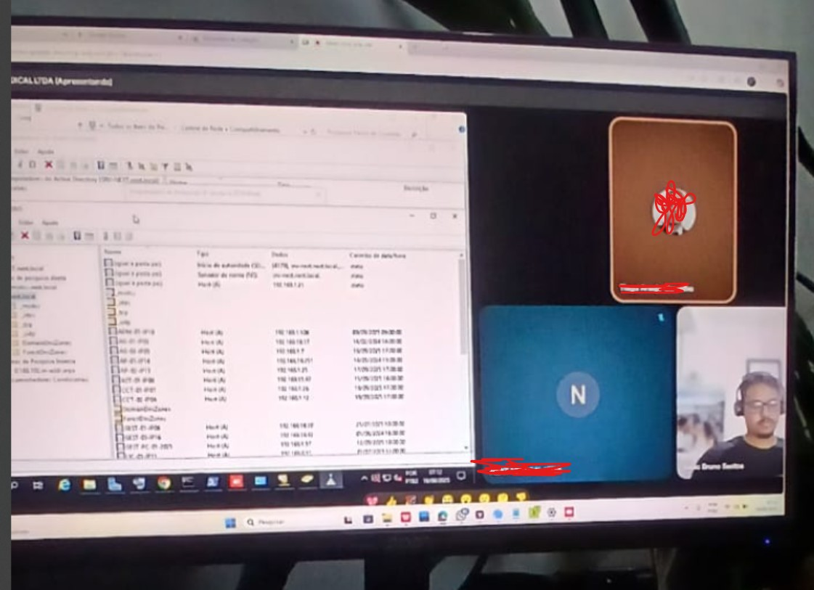

Infraestrutura de Rede Corporativa
Estruturação de rede empresarial com Windows Server, DHCP, DNS, VLAN, VPN e segmentação para usuários

Sobre o Projeto
Implementação completa de infraestrutura de rede para empresa com 200+ usuários, incluindo configuração de servidores Windows Server, implementação de serviços de rede essenciais e segmentação de tráfego através de VLANs.
Desafios Enfrentados
- Migração de infraestrutura legada
- Implementação de segurança de rede
- Configuração de segmentação VLAN
- Setup de VPN para acesso remoto
- Otimização de performance de rede
Soluções Implementadas
- Windows Server 2019: Servidor principal com Active Directory
- DHCP: Distribuição automática de endereços IP
- DNS: Resolução de nomes e serviços de diretório
- VLANs: Segmentação por departamentos e funções
- VPN: Acesso remoto seguro para usuários
- Firewall: Proteção perimetral e controle de tráfego
Tecnologias Utilizadas
Resultados Alcançados
200+
Usuários atendidos
99.9%
Uptime da rede
50%
Redução de problemas
24/7
Monitoramento